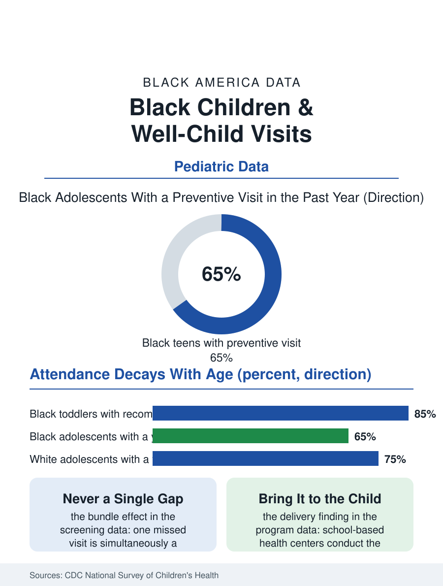

Black Public Health
Fifteen Minutes a Year: Black Children and Well-Child Visits
Well-child attendance starts high and decays fastest for Black children into adolescence, bundling a dozen missed screenings behind one appointment. The well-child file.

The well-child visit is preventive medicine's basic unit: a scheduled examination, screening, immunization, and developmental check, repeated on a schedule the pediatrics academy publishes from infancy through adolescence. Federal surveys find Black children attending well-child visits at rates somewhat below white children, with the gap widening in adolescence, and the missed visits are where the screenings in a dozen other files in this atlas fail to happen. This article reads the well-child file.
The Schedule and the Slippage
The recommended schedule is dense in the first years, a dozen or more visits by age three, and the national survey data on children's health show the system's performance honestly: infants and toddlers attend at high rates across populations, carried by the immunization schedule's gravity, while attendance decays with the child's age in every group and decays fastest in the populations this file tracks. By adolescence, when the visits carry the mental health screening, the sports physical, the substance and safety counseling, a substantial share of Black teenagers in the survey data have had no preventive visit in the measurement year, arriving at care through the urgent and emergency channels the health files price as the system's most expensive and least preventive doors. The slippage's mechanics are the access file's standard parts list: appointments offered in work hours to hourly parents, the transportation geography of the pediatric desert in Black neighborhoods, insurance churn between Medicaid renewals dropping children from panels, and the reminder systems that reach stable phone numbers best. Each mechanism is small; their product is a child whose development is screened late or never, whose vision and hearing are checked by the school if the school has a nurse, and whose file in every linked system is thinner than it should be.
What the Visit Catches
The visit's yield is the argument for its defense. Developmental screening at the recommended ages is the autism file's front door, the mechanism that moved that file's numbers; lead screening, vision and hearing screening, anemia and growth tracking, and the depression screening of the adolescent years all ride on the same appointment, so a gap in attendance is never a single gap but a bundle of them, distributed silently across the child's systems. The immunization series is the visit's most counted product, and the vaccine file's relatively strong Black childhood numbers owe much to the infant schedule's high attendance, with the adolescent vaccines, HPV above all, weakening exactly where attendance does. Anticipatory guidance, the pediatrician's counsel on sleep, safety, reading, and screens, is the visit's least measurable and most human product, a structured transfer of the child-rearing knowledge that first-time parents in every community rely on professionals to ratify. The medical home model, the continuous relationship with one practice, shows in the outcomes data what the visit count alone does not: children with a usual source of preventive care use emergency departments less for minor illness, are hospitalized less for manageable conditions, and arrive at school with their screening files complete, a set of differences that read, in a population file, as the compound interest of being known by a doctor.
The Visit After the Pandemic
The pandemic years broke the schedule nationally, deferred visits and missed immunizations forming a backlog the catch-up campaigns have been working through, with the recovery data showing the familiar gradient, affluent practices restoring their schedules first. The system's responses that demonstrably reach Black children share the design of the successful programs across this atlas: the visit is brought to the child, school-based health centers conducting the preventive visit where attendance is guaranteed, mobile clinics in the neighborhoods the office map skips, and text-based scheduling and reminder systems in the family's language with evening and weekend slots that treat the parent's work schedule as a clinical fact. Medicaid's child health benefit, the strongest entitlement in American pediatrics on paper, already pays for the full schedule; the file's gap is therefore not coverage but delivery, a distinction that assigns the repair to clinic operations, plan network adequacy, and the school-based layer rather than to legislation. The well-child file closes with the schedule's simple arithmetic. The visits are cheap, scheduled, and proven in their yields; the children who miss them are findable by name in the plans' own data; and the system that wishes to close the other gaps in this atlas, development, vision, vaccines, mood, will find them all queued behind this one appointment, which is either kept or not, fifteen minutes at a time, in the years when keeping it matters most.
More in Black Public Health
Hypertension Among Black Adults: Prevalence, Control, and Consequences
About 55 percent of Black adults have hypertension — the highest rate of any U.S. group. Prevalence, onset, control, and the stroke, heart, and kidney consequences in the data.
Diabetes Among Black Adults: Prevalence and Complications
Nearly one in five Black adults has diabetes, diagnosed or undiagnosed — and its complications fall with particular weight. The CDC data on prevalence, control, and outcomes.
Black Life Expectancy: The Gap at Birth and Its Causes
Black life expectancy at birth is about 73 years, roughly five years below the national figure — the summary measure of every health gap in this section. The CDC data.
Source: Centers for Disease Control and Prevention, National Survey of Children's Health; American Academy of Pediatrics periodicity schedule; Medicaid EPSDT data.